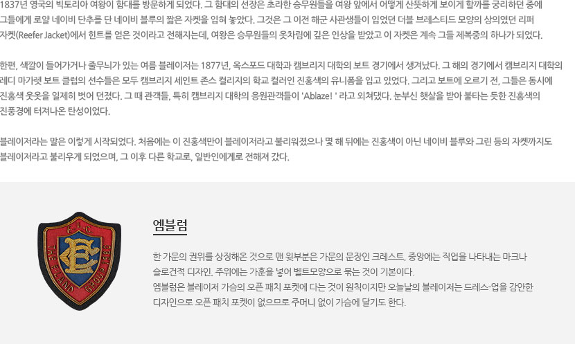
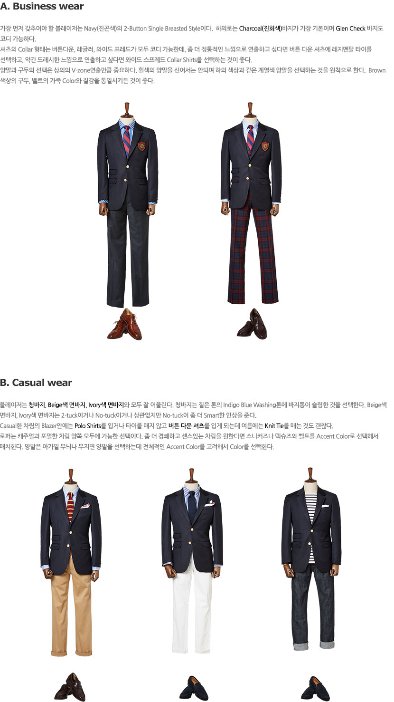
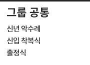
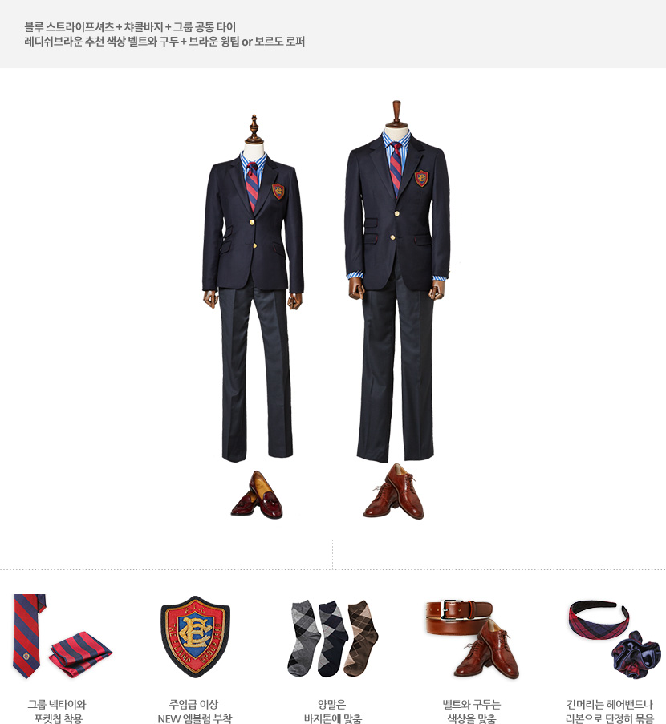
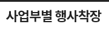
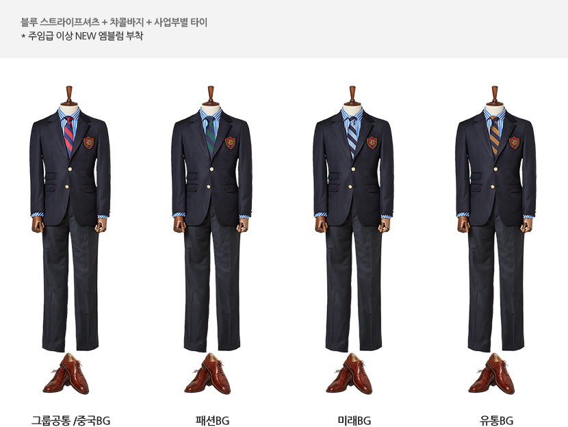
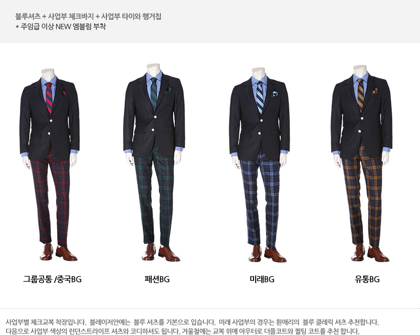

더 켄싱턴 스타일가이드
-

1837년 영국의 빅토리아 여왕이 함대를 방문하게 되었다. 그 함대의 선장은 초라한 승무원들을 여왕 앞에서 어떻게 산뜻하게 보이게 할까를 궁리하던 중에 그들에게 로얄 네이비 단추를 단 네이비 블루의 짧은 자켓을 입혀 놓았다. 그것은 그 이전 해군 사관생들이 입었던 더블 브레스티드 모양의 상의였던 리퍼 자켓(Reefer Jacket)에서 힌트를 얻은 것이라고 전해지는데, 여왕은 승무원들의 옷차림에 깊은 인상을 받았고 이 자켓은 계속 그들 제복중의 하나가 되었다.
한편, 색깔이 들어가거나 줄무늬가 있는 여름 블레이저는 1877년, 옥스포드 대학과 캠브리지 대학의 보트 경기에서 생겨났다. 그 해의 경기에서 캠브리지 대학의 레디 마가렛 보트 클럽의 선수들은 모두 캠브리지 세인트 존스 컬리지의 학교 컬러인 진홍색의 유니폼을 입고 있었다. 그리고 보트에 오르기 전, 그들은 동시에 진홍색 웃옷을 일제히 벗어 던졌다. 그 때 관객들, 특히 캠브리지 대학의 응원관객들이 'Ablaze! ' 라고 외쳐댔다. 눈부신 햇살을 받아 불타는 듯한 진홍색의 진풍경에 터져나온 탄성이었다.
블레이저라는 말은 이렇게 시작되었다. 처음에는 이 진홍색만이 블레이저라고 불리워졌으나 몇 해 뒤에는 진홍색이 아닌 네이비 블루와 그린 등의 자켓까지도 블레이저라고 불리우게 되었으며, 그 이후 다른 학교로, 일반인에게로 전해져 갔다.
엠블럼 한 가문의 권위를 상징해온 것으로 맨 윗부분은 가문의 문장인 크레스트, 중앙에는 직업을 나타내는 마크나 슬로건적 디자인, 주위에는 가훈을 넣어 벨트모양으로 묶는 것이 기본이다. 엠블럼은 블레이저 가슴의 오픈 패치 포켓에 다는 것이 원칙이지만 오늘날의 블레이저는 드레스-업을 감안한 디자인으로 오픈 패치 포켓이 없으므로 주머니 없이 가슴에 달기도 한다.
-

-
A. Business wear
가장 먼저 갖추어야 할 블레이저는 Navy(진곤색)의 2-Button Single Breasted Style이다. 하의로는 Charcoal(진회색)바지가 가장 기본이며 Glen Check 바지도 코디 가능하다. 셔츠의 Collar 형태는 버튼다운, 레귤러, 와이드 프레드가 모두 코디 가능한데, 좀 더 정통적인 느낌으로 연출하고 싶다면 버튼 다운 셔츠에 레지멘탈 타이를 선택하고, 약간 드레시한 느낌으로 연출하고 싶다면 와이드 스프레드 Collar Shirts를 선택하는 것이 좋다. 양말과 구두의 선택은 상의의 V-zone연출만큼 중요하다. 흰색의 양말을 신어서는 안되며 하의 색상과 같은 계열색 양말을 선택하는 것을 원칙으로 한다. Brown 색상의 구두, 벨트의 가죽 Color와 질감을 통일시키든 것이 좋다.
-
B. Casual wear
블레이저는 청바지, Beige색 면바지, Ivory색 면바지와 모두 잘 어울린다. 청바지는 짙은 톤의 Indigo Blue Washing톤에 바지통이 슬림한 것을 선택한다. Beige색 면바지, Ivory색 면바지는 2-tuck이거나 No-tuck이거나 상관없지만 No-tuck이 좀 더 Smart한 인상을 준다. Casual한 차림의 Blazer안에는 Polo Shirts를 입거나 타이를 매지 않고 버튼 다운 셔츠를 입게 되는데 여름에는 Knit Tie를 매는 것도 괜찮다. 로퍼는 캐주얼과 포멀한 차림 양쪽 모두에 가능한 선택이다. 좀 더 경쾌하고 센스있는 차림을 원한다면 스니커즈나 덱슈즈와 벨트를 Accent Color로 선택해서 매치한다. 양말은 아가일 무늬나 무지면 양말을 선택하는데 전체적인 Accent Color를 고려해서 Color를 선택한다.
-
A. Business wear
- 
-

블루 스트라이프셔츠 + 챠콜바지 + 그룹 공통 타이 레디쉬브라운 추천 색상 벨트와 구두 + 브라운 윙팁 or 보르도 로퍼
- 그룹 넥타이와 포켓칩 착용
- 주임급 이상 NEW 엠블럼 부착
- 양말은 바지톤에 맞춤
- 벨트와 구두는 색상을 맞춤
- 벨트와 구두는 색상을 맞춤
- 긴머리는 헤어밴드나 리본으로 단정히 묶음
- 
-
블루 스트라이프셔츠 + 챠콜바지 + 사업부별 타이 * 주임급 이상 NEW 엠블럼 부착
-
블루셔츠 + 사업부 체크바지 + 사업부 타이와 행거칩 * 주임급 이상 NEW 엠블럼 부착